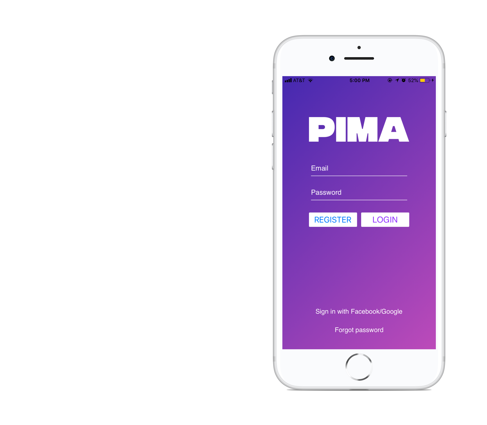

PIMA: People, Places, Parties In My Area
As part of the PIMA team, I was responsible for developing the application on iOS, using Swift and Xcode. I was also one of the main developers of the PIMA website, which was implemented through the use of Bootstrap. PIMA is the next big thing in geolocation mobile applications. It brings the community together in ways not yet seen.



For more information, go to PIMA's website!
- CREATED: June 2017
- FRAMEWORKS USED: iOS, Swift, Xcode, HTML5, CSS3, Javascript